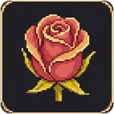
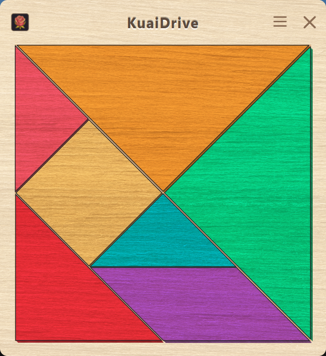

绕过虚拟网 · 原生 IPv6 / 局域网满速直连
绿色模块不依赖任何虚拟网卡或中继节点，自动探测本机公网 IPv6 与局域网 IPv4 并发起 2.5 秒连通性优选，零隧道加密损耗跑满局域网或宽带物理上限，适合家庭多设备共享大容量硬盘。

免驱动 P2P 跨网磁盘挂载与联机七巧板
一块七巧板，七个独立闭环。基于内嵌用户态 tsnet 与原生 IPv6 / 局域网 TCP 双通道，无需安装虚拟网卡驱动，凭 6 位口令即可将远端文件夹映射为本地 Z: 盘 直接浏览运行，并支持去 KV 化跨网局域网游戏端口透明转发。

点击下方任意颜色积木或标签，查看 KuaiDrive 对应模块的交互链路与底层实现
✦ 坐标 1:1 复刻自 KuaiDrive 桌面客户端 SVG 七巧板
绿色模块不依赖任何虚拟网卡或中继节点，自动探测本机公网 IPv6 与局域网 IPv4 并发起 2.5 秒连通性优选，零隧道加密损耗跑满局域网或宽带物理上限，适合家庭多设备共享大容量硬盘。
紫色板块在用户态启动嵌入式 Tailscale 节点，自动穿透复杂 NAT 并分配虚拟 IP；橙色板块通过 HTTP Basic 认证 WebDAV 与本地环回代理协同，自动完成 WebClient 4 GiB 配置并打开 Z:\。
黄色板块无需 KV 信令即可将游戏端口（默认 25565）透明映射至本地回环；退出或点击红色板块时自动卸载 Z: 盘、关闭全部监听、清理临时 VBS 脚本与注册表并归还系统内存。
Global\KuaiDrive_Absolute_Lock 防止多开冲突。Z: 盘。适合家中两台电脑位于同一 Wi-Fi 或均具备公网 IPv6 的场景：主机存放大容量学习资料、视频或便携程序，轻薄本硬盘空间不足时，无需拷贝即可直接跨机打开运行。
操作步骤：无需点击紫色板块。在主力机点击 绿色板块 → 共享磁盘 选择目录并开启共享（自动复制 6 位口令）；在另一台电脑点击 绿色板块 → 挂载磁盘 输入口令，系统自动优选公网 IPv6 或局域网 IPv4 并映射为本地 Z: 盘，直接像本地磁盘一样浏览与打开文件。
适合双方处于不同运营商网络且缺少公网 IPv6 时，进行异地远程目录挂载，或与好友跨网联机《我的世界》（Minecraft）等支持局域网直连的游戏。
操作步骤：双方先点击 紫色板块 执行「授权并接入网络」；随后使用 橙色板块 凭 6 位口令挂载远端目录为 Z: 盘（若跨网未能打通直连而走中继转发，速度将受中继延迟影响）；联机游戏则点击 黄色板块，房主开放游戏端口（默认 25565）并将复制的 虚拟IP:端口 发给好友，好友建立本地桥接后直接在游戏内粘贴本地地址进房。
连接过程中可随时点击 粉色板块 发起 4 次探测查看当前延迟与稳定性；使用完毕后点击 红色板块（或在系统托盘选择「彻底退出」），一键卸载 Z: 盘、关闭所有监听端口并自动清理临时 VBS 脚本与注册表信任项。